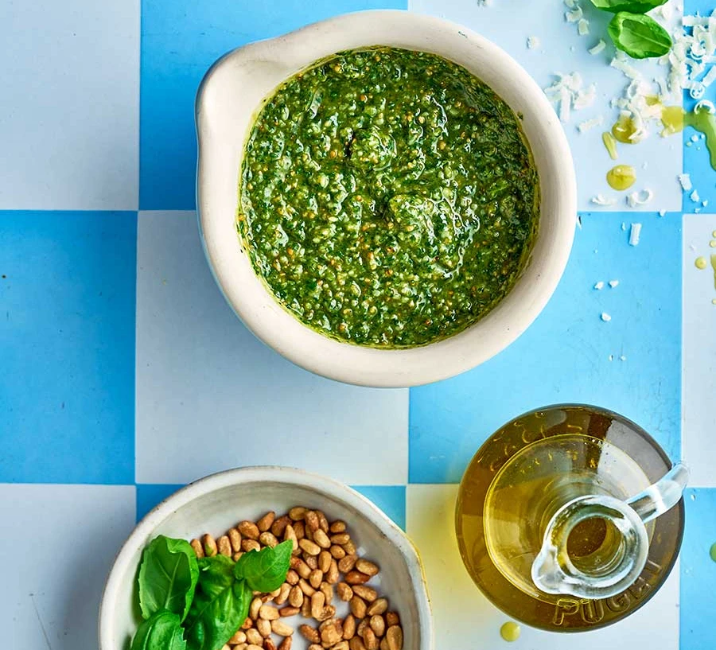

Basil Pesto

Description
Blend together basil, pine nuts or cashews, parmesan, garlic and olive oil to make your own pesto. It's perfect for pizzas, pasta and sandwiches.
Ingredients
- 50g pine nuts or cashews
- large bunch of basil, leaves picked
- 50g parmesan or vegetarian alternative
- 1 garlic clove, chopped
- 100ml olive oil
Steps
- Toast the nuts in a pan over low heat.
- Tip into a mini chopper with the remaining ingredients.
- Blitz or pound into a rough sauce.